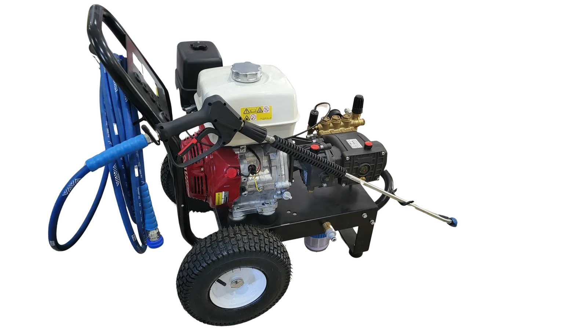
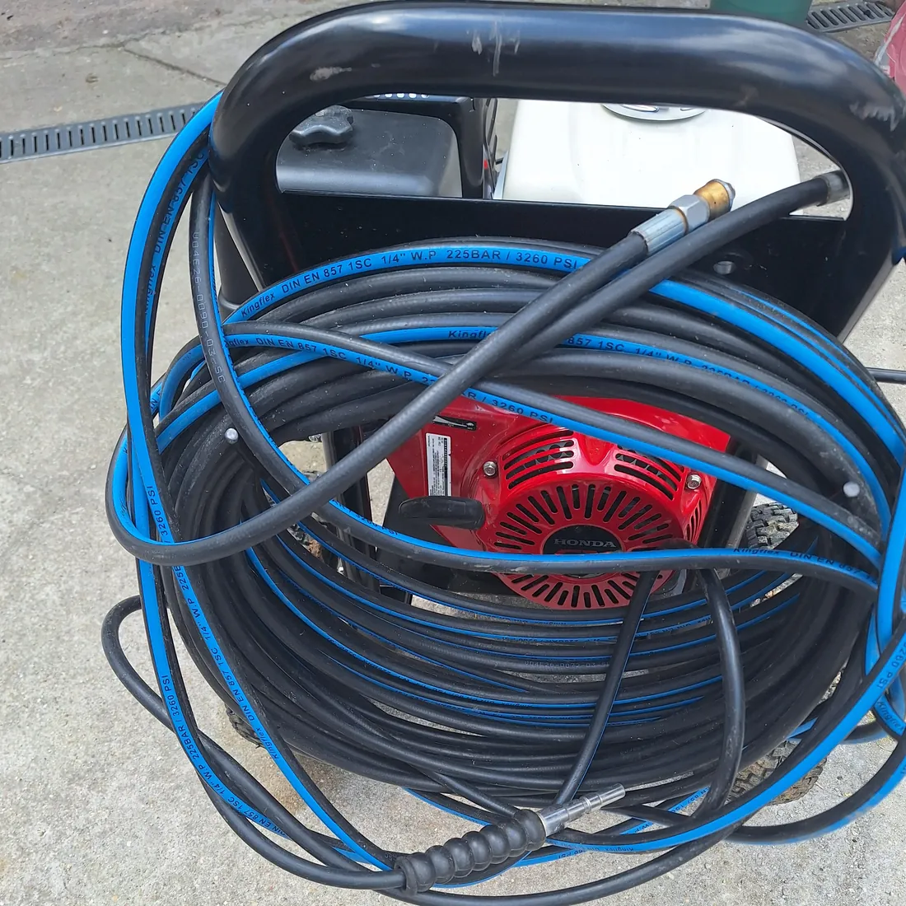
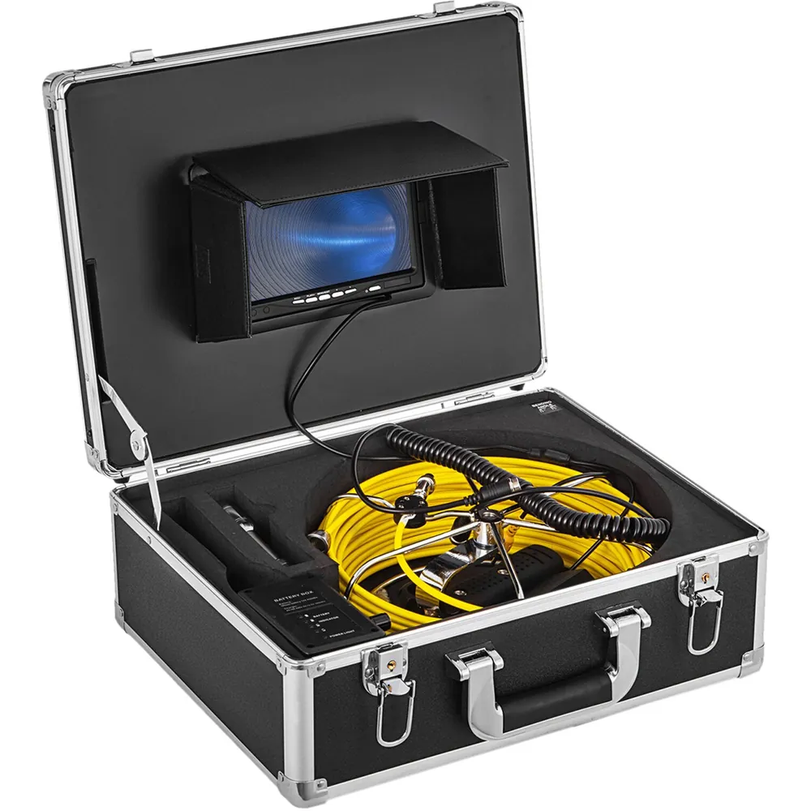
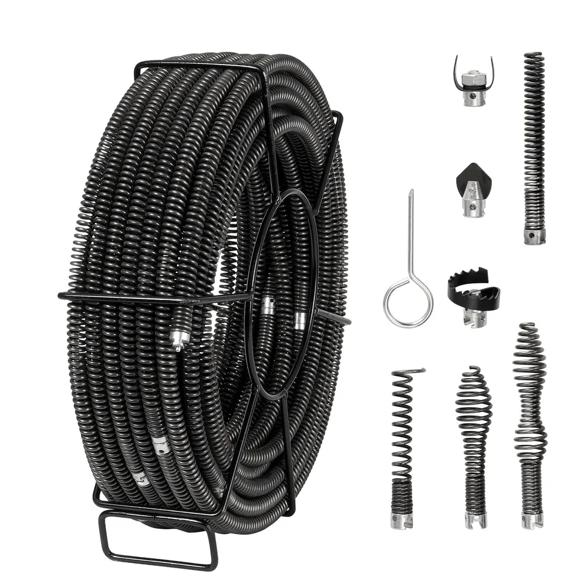
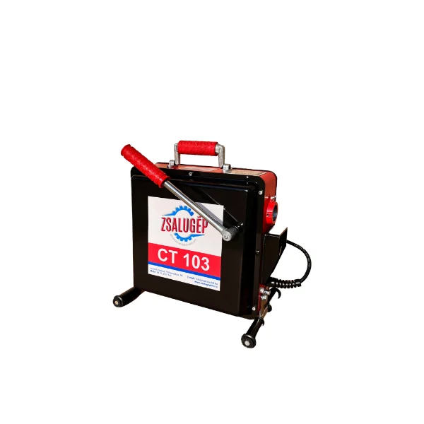

Honda-motoros magasnyomású tisztító
HPM21200/1450
Ezzel tisztítom a csatornát (woma). A magasnyomású víz nemcsak átlyukasztja a dugulást, hanem a cső faláról is lemossa a lerakódást, így később sem dugul el olyan hamar.
Oláh Sándor vagyok, öt éve dolgozom duguláselhárítóként Salgótarjánban és 70 km-es körzetében. Ennyi idő alatt a konyhai szifontól az udvari csatornáig sokféle dugulással találkoztam. A munkához saját gépparkom van.

5 év
a szakmában, Salgótarjánban és 70 km-es körzetében
6 hónap
garancia az elvégzett munkára

HPM21200/1450
Ezzel tisztítom a csatornát (woma). A magasnyomású víz nemcsak átlyukasztja a dugulást, hanem a cső faláról is lemossa a lerakódást, így később sem dugul el olyan hamar.

A kamerát leengedem a csőbe, a képernyőn látom, hol a dugulás, repedés vagy belógó gyökér. Visszatérő dugulásnál ez a leggyorsabb út a valódi okhoz.

A lakáson belüli lefolyókhoz. A fejet a dugulás fajtájához választom: más kell a zsírhoz, más a hajhoz, és más a gyökérhez.

Gépi spirál a makacsabb dugulásokhoz, ahol a kézi spirál már kevés. A motor forgatja a spirált, így a lerakódást is áttöri.